01
Crossfuze promise
The Confidence to Keep Evolving
What does Crossfuze ultimately give customers as priorities, platforms and operating realities change?
Promise
Autonomous Enterprise campaign mapThe connected marketing story behind Preparing for the Autonomous Enterprise—and the guides, models and tools that turn the narrative into a customer decision.
ServiceNow is rapidly expanding what AI can do. Crossfuze helps organisations determine what they are ready to let it do—and carries the chosen outcome into trusted operation.
Each layer answers a distinct customer question. Together they move the conversation from market ambition to an accountable next step.
Both tracks use the same foundations and accountability principles, but begin from different operational realities.
Use IT’s existing data, controls and operational evidence to pursue five measurable Zero outcome ambitions.
Preparing for the Autonomous Enterprise introduces the pathway for bringing HR, Finance, Legal, Procurement, Workplace and other functions onto AI-ready foundations.
The Road to Zero chooses the outcome. The Crossfuze method carries its meaning, controls and evidence through delivery and into operation.
Retain the ambition, operating context, constraints and assumptions.
Confirm the outcome, decision authority, measures and acceptance boundary.
Execute through governed design, configuration, integration and adoption.
Show what changed, how it was assured and how it performs in operation.
Use operational learning to make the next decision from a higher starting point.
Open the latest available version of each asset. Draft files are packaged here until their permanent Crossfuze URL is ready.
The master market story and the current guide supporting the Business Reinvention pathway.
Open guide ↗Why access to AI capability does not automatically create organisational readiness.
Open live page ↗The current Five Zeros draft for Autonomous IT: readiness, prioritisation, outcomes and delivery.
Open guide ↗The connected Crossfuze proposition from customer intent through accountable change to operational proof.
Open doctrine ↗The browser-based benchmark, Assist Estimator, Tier Map and route to the 90-minute assessment.
Open tools hub ↗A facilitated next step to validate readiness, identify the priority outcome and shape the first 90 days.
View assessment ↗“The Autonomous Enterprise is the destination. The AI Readiness Gap is the barrier. Autonomy is earned. Permission to Automate defines the boundary. The Road to Zero turns readiness into evidenced outcomes.”